Web Server Statistics for icckundli.com
Web Server Statistics for icckundli.com
Program started on Mon, Dec 31 2012 at 4:33 PM.
Analyzed requests from Tue, Dec 18 2012 at 3:44 AM to Mon, Dec 31 2012 at 8:29 AM (13.20 days).
Web Server Statistics for icckundli.comProgram started on Mon, Dec 31 2012 at 4:33 PM.
Analyzed requests from Tue, Dec 18 2012 at 3:44 AM to Mon, Dec 31 2012 at 8:29 AM (13.20 days).
(Go To: Top | General Summary | Monthly Report | Daily Summary | Hourly Summary | Domain Report | Organization Report | Failed Referrer Report | Referring Site Report | Browser Report | Browser Summary | Operating System Report | Status Code Report | File Size Report | File Type Report | Directory Report | Request Report)
Figures in parentheses refer to the 7-day period ending Dec 31 2012 at 4:33 PM.
Successful requests: 6,698 (220)
Average successful requests per day: 507 (31)
Successful requests for pages: 2,543 (165)
Average successful requests for pages per day: 192 (23)
Failed requests: 2,789 (22)
Distinct files requested: 22 (13)
Distinct hosts served: 70 (16)
Data transferred: 126.10 megabytes (4.96 megabytes)
Average data transferred per day: 9.55 megabytes (725.12 kilobytes)
(Go To: Top | General Summary | Monthly Report | Daily Summary | Hourly Summary | Domain Report | Organization Report | Failed Referrer Report | Referring Site Report | Browser Report | Browser Summary | Operating System Report | Status Code Report | File Size Report | File Type Report | Directory Report | Request Report)
Each unit ( ) represents 80 requests for pages or part thereof.
) represents 80 requests for pages or part thereof.
| month | #reqs | #pages | |
|---|---|---|---|
| Dec 2012 | 6698 | 2543 |  |
Busiest month: Dec 2012 (2,543 requests for pages).
(Go To: Top | General Summary | Monthly Report | Daily Summary | Hourly Summary | Domain Report | Organization Report | Failed Referrer Report | Referring Site Report | Browser Report | Browser Summary | Operating System Report | Status Code Report | File Size Report | File Type Report | Directory Report | Request Report)
Each unit () represents 30 requests for pages or part thereof.
| day | #reqs | #pages | |
|---|---|---|---|
| Sun | 87 | 59 |  |
| Mon | 74 | 39 | |
| Tue | 4120 | 1190 |  |
| Wed | 1796 | 878 |   |
| Thu | 116 | 79 | |
| Fri | 436 | 264 | |
| Sat | 69 | 34 | |
(Go To: Top | General Summary | Monthly Report | Daily Summary | Hourly Summary | Domain Report | Organization Report | Failed Referrer Report | Referring Site Report | Browser Report | Browser Summary | Operating System Report | Status Code Report | File Size Report | File Type Report | Directory Report | Request Report)
Each unit () represents 15 requests for pages or part thereof.
| hour | #reqs | #pages | |
|---|---|---|---|
| 0 | 4 | 4 | |
| 1 | 995 | 515 | |
| 2 | 217 | 80 | |
| 3 | 188 | 98 | |
| 4 | 2034 | 570 | |
| 5 | 730 | 209 | |
| 6 | 157 | 48 | |
| 7 | 462 | 169 | |
| 8 | 328 | 107 | |
| 9 | 396 | 196 | |
| 10 | 294 | 151 | |
| 11 | 97 | 57 | |
| 12 | 412 | 92 | |
| 13 | 224 | 94 | |
| 14 | 0 | 0 | |
| 15 | 27 | 20 | |
| 16 | 17 | 17 | |
| 17 | 0 | 0 | |
| 18 | 8 | 8 | |
| 19 | 9 | 9 | |
| 20 | 24 | 24 | |
| 21 | 39 | 39 | |
| 22 | 9 | 9 | |
| 23 | 27 | 27 | |
(Go To: Top | General Summary | Monthly Report | Daily Summary | Hourly Summary | Domain Report | Organization Report | Failed Referrer Report | Referring Site Report | Browser Report | Browser Summary | Operating System Report | Status Code Report | File Size Report | File Type Report | Directory Report | Request Report)
Listing domains, sorted by the amount of traffic.
| #reqs | %bytes | domain |
|---|---|---|
| 6698 | 100% | [unresolved numerical addresses] |
(Go To: Top | General Summary | Monthly Report | Daily Summary | Hourly Summary | Domain Report | Organization Report | Failed Referrer Report | Referring Site Report | Browser Report | Browser Summary | Operating System Report | Status Code Report | File Size Report | File Type Report | Directory Report | Request Report)
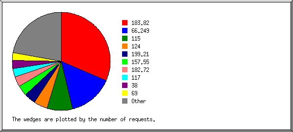
Listing the top 20 organizations by the number of requests, sorted by the number of requests.
| #reqs | %bytes | organization |
|---|---|---|
| 3563 | 28.36% | 183.82 |
| 777 | 23.03% | 115 |
| 570 | 2.77% | 124 |
| 484 | 6.59% | 66.249 |
| 256 | 10.66% | 117 |
| 231 | 8.97% | 101 |
| 203 | 7.82% | 69 |
| 100 | 1.78% | 74 |
| 84 | 0.19% | 38 |
| 70 | 1.73% | 106 |
| 56 | 0.13% | 65.55 |
| 49 | 3.08% | 173.252 |
| 45 | 1.54% | 207.181 |
| 32 | 0.92% | 206.183 |
| 29 | 2.14% | 66.220 |
| 27 | 0.06% | 198.186 |
| 24 | 0.06% | 92 |
| 18 | 0.02% | 82 |
| 16 | 0.02% | 178.32 |
| 9 | 0.02% | 205.186 |
| 55 | 0.13% | [not listed: 7 organizations] |
(Go To: Top | General Summary | Monthly Report | Daily Summary | Hourly Summary | Domain Report | Organization Report | Failed Referrer Report | Referring Site Report | Browser Report | Browser Summary | Operating System Report | Status Code Report | File Size Report | File Type Report | Directory Report | Request Report)
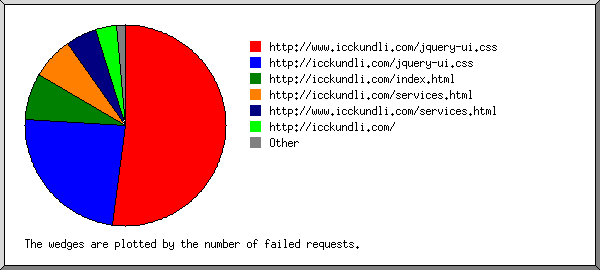
Listing referring URLs, sorted by the number of failed requests.
(Go To: Top | General Summary | Monthly Report | Daily Summary | Hourly Summary | Domain Report | Organization Report | Failed Referrer Report | Referring Site Report | Browser Report | Browser Summary | Operating System Report | Status Code Report | File Size Report | File Type Report | Directory Report | Request Report)
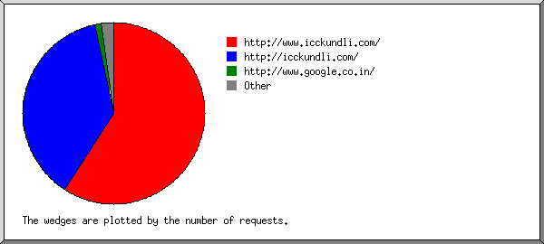
Listing referring sites, sorted by the number of requests.
| #reqs | site |
|---|---|
| 3308 | http://www.icckundli.com/ |
| 1669 | http://icckundli.com/ |
| 35 | http://www.facebook.com/ |
| 10 | http://www.google.com/ |
| 9 | http://whois.domaintools.com/ |
| 8 | http://www.google.co.in/ |
(Go To: Top | General Summary | Monthly Report | Daily Summary | Hourly Summary | Domain Report | Organization Report | Failed Referrer Report | Referring Site Report | Browser Report | Browser Summary | Operating System Report | Status Code Report | File Size Report | File Type Report | Directory Report | Request Report)
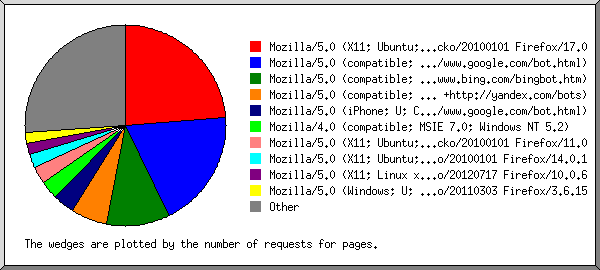
Listing browsers with at least 1 request for a page, sorted by the number of requests for pages.
| #reqs | #pages | browser |
|---|---|---|
| 3938 | 1314 | Mozilla/5.0 (X11; Ubuntu; Linux i686; rv:17.0) Gecko/20100101 Firefox/17.0 |
| 412 | 384 | Mozilla/5.0 (compatible; Googlebot/2.1; +http://www.google.com/bot.html) |
| 227 | 123 | Mozilla/5.0 (X11; Linux x86_64; rv:10.0.6) Gecko/20120717 Firefox/10.0.6 |
| 391 | 105 | Mozilla/5.0 (Windows; U; Windows NT 6.1; en-US; rv:1.9.2.15) Gecko/20110303 Firefox/3.6.15 |
| 171 | 63 | Mozilla/5.0 (Windows NT 6.1; rv:17.0) Gecko/20100101 Firefox/17.0 |
| 56 | 56 | msnbot/2.0b (+http://search.msn.com/msnbot.htm) |
| 130 | 50 | Mozilla/5.0 (Windows NT 5.1; rv:5.0.1) Gecko/20100101 Firefox/5.0.1 |
| 48 | 48 | Mozilla/4.0 (compatible; MSIE 7.0b; Windows NT 6.0) |
| 35 | 35 | Mozilla/5.0 (X11; Ubuntu; Linux i686; rv:14.0; ips-agent) Gecko/20100101 Firefox/14.0.1 |
| 30 | 30 | Google-Site-Verification/1.0 |
| 32 | 24 | Mozilla/4.0 (compatible; http://search.thunderstone.com/texis/websearch/about.html) |
| 24 | 24 | Mozilla/5.0 (X11; Ubuntu; Linux x86_64; rv:11.0) Gecko/20100101 Firefox/11.0 |
| 180 | 20 | Mozilla/5.0 (Windows NT 5.2) AppleWebKit/537.11 (KHTML, like Gecko) Chrome/23.0.1271.97 Safari/537.11 |
| 20 | 20 | Mozilla/4.0 (compatible; MSIE 7.0; Windows NT 5.1) |
| 120 | 20 | Mozilla/5.0 (Windows NT 6.2; WOW64; rv:17.0) Gecko/20100101 Firefox/17.0 |
| 120 | 20 | Mozilla/5.0 (Windows NT 5.2; rv:17.0) Gecko/20100101 Firefox/17.0 |
| 90 | 18 | Mozilla/5.0 (Windows NT 6.1; WOW64; rv:17.0) Gecko/17.0 Firefox/17.0 |
| 16 | 16 | Mozilla/5.0 (compatible; 4SeoHuntBot; +http://4seohunt.com/bot.html) |
| 16 | 16 | Mozilla/5.0 (Windows; U; Windows NT 6.0; en-US; rv:1.9.0.6) Gecko/2009011913 Firefox/3.0.6 (.NET CLR 3.5.30729) |
| 70 | 10 | Mozilla/5.0 (Windows NT 6.1; WOW64; rv:14.0) Gecko/20100101 Firefox/14.0.1 |
| 70 | 10 | Mozilla/5.0 (X11; Linux x86_64) AppleWebKit/537.4 (KHTML, like Gecko; Google Web Preview) Chrome/22.0.1229 Safari/537.4 |
| 70 | 10 | Mozilla/5.0 (Windows NT 6.1; rv:12.0; WUID=b94710fd027dbeaa3cb409302d6fab4b; WTB=2937) Gecko/20100101 Firefox/12.0 |
| 239 | 10 | facebookexternalhit/1.1 (+http://www.facebook.com/externalhit_uatext.php) |
| 9 | 9 | Mozilla/5.0 (Macintosh; Intel Mac OS X 10.7; rv:14.0) Gecko/20100101 Firefox/14.0.1 |
| 9 | 9 | Mozilla/4.0 (compatible; MSIE 6.0; Windows NT 5.1; SV1; .NET CLR 1.1.4322) |
| 9 | 9 | Mozilla/5.0 (Windows NT 5.1) Gecko/20100101 Firefox/9.0.1 |
| 9 | 9 | Mozilla/5.0 (Windows NT 6.1; WOW64; rv:7.0.1) Gecko/20100101 Firefox/7.0.1 |
| 9 | 9 | Mozilla/4.0 (compatible; MSIE 6.0; Windows NT 5.1; SV1) |
| 9 | 9 | Mozilla/5.0 (Macintosh; U; Intel Mac OS X 10.5; en-US; rv:1.9.2.13) Gecko/20101203 Firefox/3.6.13 GTB7.1 |
| 8 | 8 | Mozilla/4.0 (compatible; MSIE 6.0; Windows 98; Win 9x4.90) |
| 7 | 7 | BlackBerry9000/4.6.0.167 Profile/MIDP-2.0 Configuration/CLDC-1.1 VendorID/102 ips-agent |
| 6 | 6 | Mozilla/5.0 (compatible; bingbot/2.0; +http://www.bing.com/bingbot.htm) |
| 5 | 5 | Yahoo! Slurp China |
| 5 | 1 | Mozilla/5.0 (X11; Linux i686) AppleWebKit/537.11 (KHTML, like Gecko) Chrome/23.0.1271.97 Safari/537.11 |
| 72 | 0 | [not listed: 1 browser] |
(Go To: Top | General Summary | Monthly Report | Daily Summary | Hourly Summary | Domain Report | Organization Report | Failed Referrer Report | Referring Site Report | Browser Report | Browser Summary | Operating System Report | Status Code Report | File Size Report | File Type Report | Directory Report | Request Report)
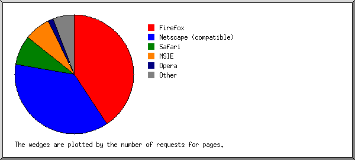
Listing browsers with at least 1 request for a page, sorted by the number of requests for pages.
| # | #reqs | #pages | browser |
|---|---|---|---|
| 1 | 5438 | 1844 | Firefox |
| 4439 | 1435 | Firefox/17 | |
| 416 | 130 | Firefox/3 | |
| 227 | 123 | Firefox/10 | |
| 114 | 54 | Firefox/14 | |
| 130 | 50 | Firefox/5 | |
| 24 | 24 | Firefox/11 | |
| 70 | 10 | Firefox/12 | |
| 9 | 9 | Firefox/9 | |
| 9 | 9 | Firefox/7 | |
| 2 | 466 | 430 | Netscape (compatible) |
| 3 | 94 | 94 | MSIE |
| 68 | 68 | MSIE/7 | |
| 26 | 26 | MSIE/6 | |
| 4 | 56 | 56 | msnbot |
| 56 | 56 | msnbot/2 | |
| 5 | 255 | 31 | Safari |
| 255 | 31 | Safari/537 | |
| 6 | 30 | 30 | Google-Site-Verification |
| 30 | 30 | Google-Site-Verification/1 | |
| 7 | 239 | 10 | facebookexternalhit |
| 239 | 10 | facebookexternalhit/1 | |
| 8 | 7 | 7 | BlackBerry9000 |
| 7 | 7 | BlackBerry9000/4 | |
| 9 | 5 | 5 | Yahoo! Slurp China |
| 72 | 0 | [not listed: 1 browser] |
(Go To: Top | General Summary | Monthly Report | Daily Summary | Hourly Summary | Domain Report | Organization Report | Failed Referrer Report | Referring Site Report | Browser Report | Browser Summary | Operating System Report | Status Code Report | File Size Report | File Type Report | Directory Report | Request Report)
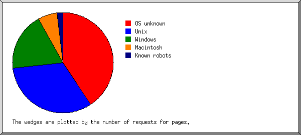
Listing operating systems, sorted by the number of requests for pages.
| # | #reqs | #pages | OS |
|---|---|---|---|
| 1 | 4299 | 1507 | Unix |
| 4299 | 1507 | Linux | |
| 2 | 742 | 477 | OS unknown |
| 3 | 1470 | 444 | Windows |
| 985 | 299 | Unknown Windows | |
| 177 | 97 | Windows XP | |
| 300 | 40 | Windows Server 2003 | |
| 8 | 8 | Windows 98 | |
| 4 | 133 | 61 | Known robots |
| 5 | 18 | 18 | Macintosh |
(Go To: Top | General Summary | Monthly Report | Daily Summary | Hourly Summary | Domain Report | Organization Report | Failed Referrer Report | Referring Site Report | Browser Report | Browser Summary | Operating System Report | Status Code Report | File Size Report | File Type Report | Directory Report | Request Report)
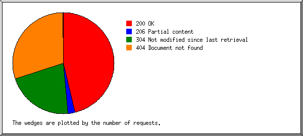
Listing status codes, sorted numerically.
| #reqs | status code |
|---|---|
| 3016 | 200 OK |
| 379 | 206 Partial content |
| 3303 | 304 Not modified since last retrieval |
| 2789 | 404 Document not found |
(Go To: Top | General Summary | Monthly Report | Daily Summary | Hourly Summary | Domain Report | Organization Report | Failed Referrer Report | Referring Site Report | Browser Report | Browser Summary | Operating System Report | Status Code Report | File Size Report | File Type Report | Directory Report | Request Report)
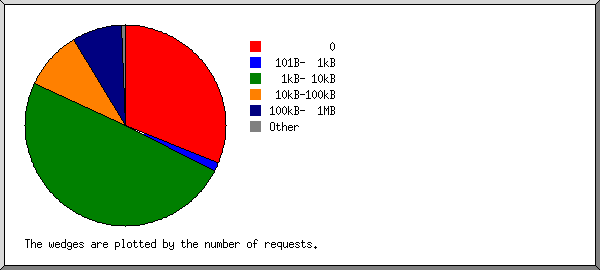
| size | #reqs | %bytes |
|---|---|---|
| 0 | 3320 | |
| 1B- 10B | 30 | |
| 11B- 100B | 20 | |
| 101B- 1kB | 180 | 0.07% |
| 1kB- 10kB | 2007 | 3.99% |
| 10kB-100kB | 675 | 40.23% |
| 100kB- 1MB | 466 | 55.70% |
(Go To: Top | General Summary | Monthly Report | Daily Summary | Hourly Summary | Domain Report | Organization Report | Failed Referrer Report | Referring Site Report | Browser Report | Browser Summary | Operating System Report | Status Code Report | File Size Report | File Type Report | Directory Report | Request Report)
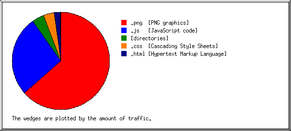
Listing extensions with at least 0.1% of the traffic, sorted by the amount of traffic.
| #reqs | %bytes | extension |
|---|---|---|
| 2718 | 63.49% | .png [PNG graphics] |
| 556 | 29.60% | .js [JavaScript code] |
| 881 | 3.65% | .css [Cascading Style Sheets] |
| 1435 | 1.65% | .html [Hypertext Markup Language] |
| 1108 | 1.61% | [directories] |
(Go To: Top | General Summary | Monthly Report | Daily Summary | Hourly Summary | Domain Report | Organization Report | Failed Referrer Report | Referring Site Report | Browser Report | Browser Summary | Operating System Report | Status Code Report | File Size Report | File Type Report | Directory Report | Request Report)
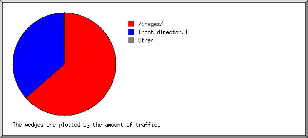
Listing directories with at least 0.01% of the traffic, sorted by the amount of traffic.
| #reqs | %bytes | directory |
|---|---|---|
| 2738 | 63.50% | /images/ |
| 3344 | 36.33% | [root directory] |
| 616 | 0.17% | /css/ |
(Go To: Top | General Summary | Monthly Report | Daily Summary | Hourly Summary | Domain Report | Organization Report | Failed Referrer Report | Referring Site Report | Browser Report | Browser Summary | Operating System Report | Status Code Report | File Size Report | File Type Report | Directory Report | Request Report)
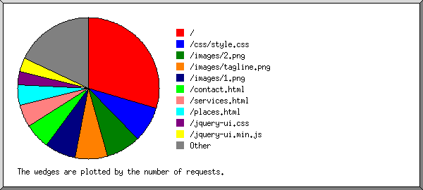
Listing files with at least 20 requests, sorted by the number of requests.
| #reqs | %bytes | last time | file |
|---|---|---|---|
| 1088 | 1.61% | Dec/31/12 8:29 AM | / |
| 676 | 26.38% | Dec/31/12 5:40 AM | /images/2.png |
| 616 | 0.17% | Dec/31/12 5:40 AM | /css/style.css |
| 548 | 21.43% | Dec/31/12 5:40 AM | /images/1.png |
| 545 | 0.21% | Dec/31/12 5:40 AM | /images/tagline.png |
| 510 | 0.29% | Dec/27/12 7:22 AM | /contact.html |
| 370 | 0.29% | Dec/19/12 1:01 AM | /images/main.png |
| 341 | 0.53% | Dec/27/12 7:22 AM | /services.html |
| 330 | 0.06% | Dec/18/12 1:41 PM | /images/facebook.png |
| 286 | 0.45% | Dec/27/12 7:22 AM | /places.html |
| 278 | 9.14% | Dec/27/12 7:22 AM | /jquery.min.js |
| 278 | 20.46% | Dec/27/12 7:22 AM | /jquery-ui.min.js |
| 265 | 3.48% | Dec/21/12 10:38 AM | /jquery-ui.css |
| 249 | 15.12% | Dec/27/12 11:42 AM | /images/warehouse.png |
| 137 | 0.16% | Dec/27/12 7:22 AM | /career-iccl.html |
| 131 | 0.20% | Dec/27/12 7:22 AM | /static_pages.html |
| 20 | Dec/18/12 9:23 AM | /google6b3ae17c482ee4d5.html | |
| 20 | Dec/18/12 4:01 AM | /images/ | |
| 10 | 0.02% | Dec/18/12 3:44 AM | [not listed: 1 file] |